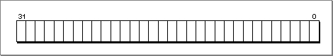
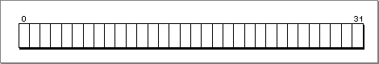

Legacy Document
Important: The information in this document is obsolete and should not be used for new development.
Important: The information in this document is obsolete and should not be used for new development.


Conventions Used in This Book
Inside Macintosh uses various conventions to present information. Words that require special treatment appear in specific fonts or font styles. Certain information, such as parameter blocks, appears in special formats so that you can scan it quickly.Special Fonts
All code listings, reserved words, and the names of actual data structures, constants, fields, parameters, and routines are shown in Courier (this is Courier).Words that appear in boldface are key terms or concepts and are defined in the glossary at the end of this book. Note that numerical entries (for example, 32-bit clean) are sorted before all alphabetical entries in the glossary and in the index.
Types of Notes
There are several types of notes used in Inside Macintosh.
- Note
- A note like this contains information that is interesting but possibly not essential to an understanding of the main text. (An example appears on page 1-6.)

IMPORTANT
- A note like this contains information that is essential for an understanding of the main text. (An example appears on page 1-19.)
WARNING
- Warnings like this indicate potential problems that you should be aware of as you design your application. Failure to heed these warnings
could result in system crashes or loss of data. (An example appears on page 1-8.)Bit Numbering and Word Size
This book departs from the conventions followed in previous Inside Macintosh books in regard to the numbering of bits within a range of data. Previously, for example, the bits in a 32-bit data type were numbered 0 to 31, from right to left, as shown in Figure P-1 on the following page. The least significant bit of a 32-bit data type was addressed as bit 0, and the most significant bit was addressed as bit 31. This convention was in accordance with that used by Motorola in the books documenting their 680x0 family of microprocessors (for example, the MC68040 32-Bit Microprocessor User's Manual).Figure P-1 680x0 bit numbering
 In this book, the bits in a 32-bit data type are numbered 0 to 31, from left to right. The most significant bit of a 32-bit data type is addressed as bit 0, and the least significant bit is addressed as bit 31. This convention, illustrated in Figure P-2, is in accordance with the bit-numbering conventions used by Motorola in the books documenting the PowerPC family of microprocessors (for example, the PowerPC 601 RISC Microprocessor User's Manual).
Figure P-2 PowerPC bit numbering
 In addition, there are differences between 680x0 and the PowerPC terminology to describe the sizes of certain memory operands, as shown in Table P-1.
Table P-1 Sizes of memory operands Size 680x0 terminology PowerPC terminology 8 bits Byte Byte 2 bytes Word Half word 4 bytes Long word Word 8 bytes N/A Double word 16 bytes N/A Quad word To avoid confusion, however, this book generally uses bytes to give the sizes of objects in memory.
Assembly-Language Information
Inside Macintosh presents information about the fields of a parameter block in this format:Parameter block
\xB4 inAndOutHandleInput/output parameter. \xA8 output1PtrOutput parameter. --> input1PtrInput parameter. The arrow in the far-left column indicates whether the field is an input parameter, output parameter, or both. You must supply values for all input parameters and input/output parameters. The routine returns values in output parameters and input/output parameters.
The second column shows the field name as defined in the MPW C interface files; the third column indicates the C data type of that field. The fourth column provides a brief description of the use of the field. For a complete description of each field, see the discussion that follows the parameter block or the description of the parameter block in the reference section of
the chapter.
© Apple Computer, Inc.
3 JUL 1996